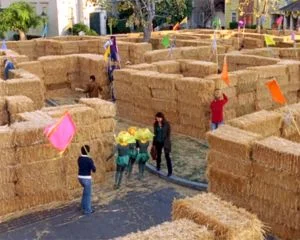
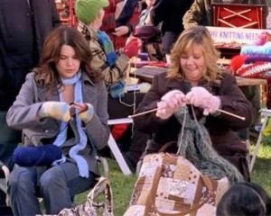
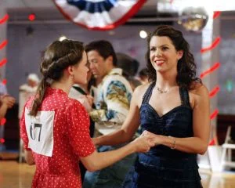

Stars Hollow Chamber of Commerce
Current Events
Come to the grand opening of The Dragonfly Inn! The newly restored inn promises luxurious accommodations filled with character and comfort. At the Dragonfly Inn, no detail has been overlooked and every guest is treated like family. Executive Chef Sookie St. James has crafted a mouthwatering menu using only the freshest, seasonal ingredients. From tasty breakfasts to exquisite dinners, the Dragonfly Inn's kitchen will delight your tastebuds with each and every meal. We eagerly welcome you to see what the Dragonfly Inn has to offer - a lovingly restored inn where guests can relax, reconnect and recharge. Don't miss this exciting new addition to the Stars Hollow community!
Weather

Snow
30°F | 10 mph winds
Hay Bale Maze
Get lost in the fun at the annual Stars Hollow Hay Bale Maze! Bring your family and friends to the Hay Bale Maze for wholesome, autumnal fun! Admission is just $5 per person. Dress warmly and come ready to laugh and make memories. We can’t wait to see you there!
Knit-a-Thon
Get those knitting needles ready for the annual Stars Hollow Knit-a-Thon! Bring your own projects to work on, or stop by to purchase donated yarn and needles with proceeds benefiting the Stars Hollow Wildlife Protection Society. Let’s stitch together to spread warmth and give back! Admission is free and all knitting levels are encouraged to participate.
24 Hour Dance Marathon
Grab your dancing shoes and get ready to kick up your heels at Stars Hollow's 24 Hour Dance Marathon! This year's marathon aims to raise money for the Stars Hollow Minority Small Business Alliance, helping minority, women and immigrant-owned local businesses right here in our community. Dancers collect pledges from friends and family to dance for the full 24 hours, competing in dance contests and speed rounds of popular genres from waltz to salsa.